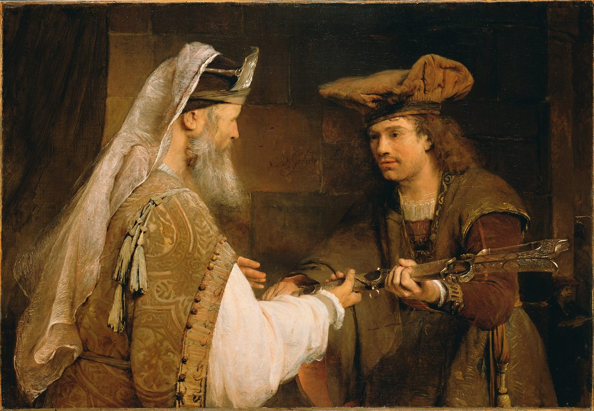
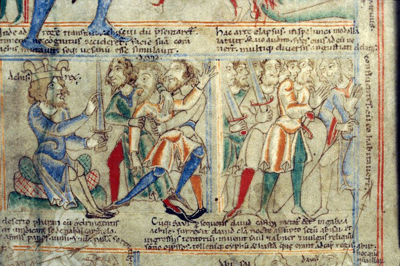

1 Samuel 21 — The Mister Translation

1 Samuel 21:10: “The sword of Goliath the Philistine, whom you struck in the valley of Elah — look, it is wrapped in a cloak behind the ephod … And David said: ‘There is none like it; give it to me.’” De Gelder, Rembrandt’s last pupil, paints the handing-over as a quiet exchange between an old priest and a young man in Dutch finery; the cloak the sword was wrapped in is gone, and the bread is not shown.


1 Samuel 21:14: “And he changed his good sense in their eyes, and played the madman in their hands.” The Latin caption above the left scene says that David changed his face before the king and pretended to be mad; the painter labels the king Achis rex and shows David held up by two men, “in their hands”. The caption over the right scene goes on to the next chapter: having escaped by this trick, he hid in the cave of Adullam, and the crowd are the men who gathered to him there (22:1–2).

Translator's Notes — verse by verse
The parting, finished. “And he arose and went; and Jonathan came into the city”: va-yaqom va-yelakh, vi-Yehonatan ba ha-ir. The Hebrew opens chapter 21 with the last line of the parting at the end of chapter 20 (already on these pages): the two men go opposite ways, one away into flight and the other back into the city where his father sits at table. The Hebrew does not name the one who leaves; the Greek does, “And David arose and departed”. They will meet once more, at Horesh in the wilderness of Ziph, where Jonathan “strengthened his hand in God” (23:16–18).
Where the shelf puts it. Most of the shelf prints these words as the end of 20:42: the ASV has “And he arose and departed: and Jonathan went into the city”; the NIV names him, “Then David left, and Jonathan went back to the town”; the TLB “So they parted, David going away and Jonathan returning to the city.” The Geneva gives them a verse of their own, 20:43, “And he arose and departed, and Jonathan went into the city”; so does the Douay, which names him: “And David arose, and departed”. Either way, all thirteen versions on the shelf begin chapter 21 with David coming to Nob, so from verse 2 on this page each verse number is one higher than theirs: this page’s 21:2 is their 21:1, and its 21:16 is their 21:15. The Greek numbers as the Hebrew does.
Nob and its priest. “And David came to Nob, to Ahimelech the priest”: nobeh, Nob with the ending of direction, “to Nob” (Nob). The next chapter calls it “Nob, the city of the priests” (22:19, now on these pages), and Isaiah puts it within sight of Jerusalem, where the Assyrian halts “at Nob” and shakes his fist at the mount of the daughter of Zion (Isaiah 10:32). Ahimelech is “the son of Ahitub” (22:9, 11) and the father of Abiathar (22:20, both now on these pages; 23:6) (Ahimelech). Ahijah son of Ahitub was carrying the ephod for Saul in 14:3 (already on these pages); whether he is the same man under another name, or a brother, is argued (reported, not decided). The Greek calls him Abimelech. When Jesus retells this visit, Mark’s Gospel has it happen “in the time of Abiathar the high priest” (Mark 2:26, already on these pages), and that chapter’s note lays out the problem; on this page the priest is Ahimelech throughout.
Trembling to meet him. “And Ahimelech came trembling to meet David”: va-yecherad Achimelekh liqrat David. These are the words of 16:4 (already on these pages), where “the elders of the city came trembling to meet” Samuel at Bethlehem and asked “Is your coming peace?”; the verb of trembling stands beside “to meet” in just those two verses. The elders feared a prophet; Ahimelech fears what a man of Saul’s court, alone, might mean. “Why are you alone, and no man with you?”: the king’s son-in-law and commander of a thousand (18:13, 27, already on these pages) has arrived without his men. The ASV has “Ahimelech came to meet David trembling”; the KJV “Ahimelech was afraid at the meeting of David”; the NWT 1984 “A·himʹe·lech began to tremble at meeting David”; the Douay “Achimelech was astonished at David’s coming”.
The king’s matter. “The king has commanded me a matter, and said to me, ‘Let no man know anything of the matter on which I am sending you’”: ha-melekh tsivvani davar. Saul has sent David nowhere; the reader of chapters 19 and 20 knows that the king is trying to kill him. The Hebrew tells the story without a word of comment. The TLB adds one, after the first sentence: “David lied.” The cost of the lie is paid in the next chapter, by the priest who believed it (22:9–19, now on these pages). The ASV has “The king hath commanded me a business”; the NWT 2013 “The king instructed me to do something”.
Such-and-such a place. “And the young men I have directed to such-and-such a place”: el-meqom peloni almoni, a pair of words for a name the speaker will not say (peloni almoni). The pair stands in three verses of the Hebrew Bible: Boaz calls the nearer redeemer “so-and-so” (Ruth 4:1, already on these pages), David hides his men’s meeting place here, and the king of Aram hides the site of his camp (2 Kings 6:8). The Greek did not translate the pair but wrote it as a name, “in the place called God’s Faithfulness, Phellani Maemoni”, as it turned Jonathan’s mattarah, target, into a name in 20:20 (already on these pages). The ASV has “I have appointed the young men to such and such a place”; the NWT 1984 “I have made an appointment with the young men for such and such a place”; the NIV “As for my men, I have told them to meet me at a certain place.” The young men are ha-ne’arim, the plural of the word for Jonathan’s boy with the arrows (na’ar); here they are David’s soldiers.
Five loaves, under your hand. “What is there under your hand? Five [loaves of] bread — give [them] into my hand, or whatever is found”: chamishah-lechem, “five bread”, with no word for loaves. “Under your hand”, tachat yadekha, is what you have to hand, and the phrase runs through the scene: no common bread “under my hand” (verse 5), a spear or a sword “under your hand” (verse 9), and David asks for everything “into my hand”. The ASV has “Now therefore what is under thy hand? give me five loaves of bread in my hand, or whatsoever there is present”; the NWT 1984 “if there are five loaves of bread at your disposal”; the KJV “or what there is present”.
Common bread and holy bread. “There is no common bread under my hand; but there is holy bread”: ein-lechem chol … ki-im-lechem qodesh. Chol, common, is the opposite of qodesh, holy, the pair the priests were told to keep apart: “so that you may distinguish between the holy and the common” (Leviticus 10:10, already on these pages) (chol, qodesh). “Common bread” stands in one verse of the Hebrew Bible, and “holy bread” stands in one verse, both of them this one. The ASV has “There is no common bread under my hand, but there is holy bread”; the KJV “but there is hallowed bread”; the NWT 1984 “There is no ordinary bread under my hand, but there is holy bread”.
If only the young men have kept themselves. “If only the young men have kept themselves from women”: im-nishmeru ha-ne’arim akh me-ishah. It is the rule given before Sinai, “do not go near a woman” (Exodus 19:15), and the uncleanness of Leviticus 15:16–18 (both already on these pages), applied to soldiers. The ASV has “if only the young men have kept themselves from women”; the KJV “if the young men have kept themselves at least from women”; the NWT 1984 “provided that the young men have at least kept themselves from womankind”; the Douay turns it into a question, “if the young men be clean, especially from women?”
Kept from us, as yesterday and the day before. “Truly women have been kept from us, as yesterday and the day before, when I went out”: ishah atsurah-lanu kitmol shilshom. The verb is atsar, to hold back, and it comes back two verses later for Doeg, “detained before Jehovah” (atsar). In this spelling, “as yesterday and the day before” stands in three verses of the Hebrew Bible: twice in Egypt, of the straw no longer given for the bricks (Exodus 5:7, 14, already on these pages), and here. It means “as at other times”, and it can also be heard as a count of days. The ASV and the KJV take it as a count: “Of a truth women have been kept from us about these three days”; the NWT 1984 “the same as formerly when I went out”; the NWT 2013 “as on previous occasions when I went out on a campaign”.
The vessels of the young men. “And the vessels of the young men were holy. And it is a common journey; how much more, then, today shall it be holy in the vessel”: keli is any made thing, a jar, a bag, a piece of gear, a weapon, and in verse 9 it is David’s “weapons” (kelim). David may mean the men’s packs, or their bodies; the second is how several versions read it. Paul uses the same picture: “that each one of you know how to acquire his own vessel in sanctification and honor” (1 Thessalonians 4:4, already on these pages). The last clause is hard, and this translation leaves its “it” as unclear as the Hebrew does. The ASV has “the vessels of the young men were holy, though it was but a common journey; how much more then to-day shall their vessels be holy?”; the KJV “and the bread is in a manner common, yea, though it were sanctified this day in the vessel”; the NWT 1984 “the organisms of the young men continue holy, although the mission itself is ordinary”; the NIV “The men’s bodies are holy even on missions that are not holy”; the Douay “Now this way is defiled, but it shall also be sanctified this day in the vessels.”
The bread of the presence. “And the priest gave him holy [bread]; for there was no bread there but the bread of the presence, which was removed from before Jehovah, to put hot bread [there] on the day it was taken away”: lechem ha-panim, the bread set out on the table “before me always” (Exodus 25:30, already on these pages) (lechem panim). The Law gives the old loaves to Aaron and his sons, to be eaten “in a holy place” (Leviticus 24:9), and the loaves were changed “every sabbath day” (24:8, both already on these pages); from that, Jewish tradition reads David’s visit as falling on a sabbath (reported, not decided). The Hebrew says only “holy”: the ASV has “So the priest gave him holy bread”, the NWT 1984 “the priest gave him what was holy”, the KJV “hallowed bread” and “the shewbread”, the Douay “the loaves of proposition”.
The loaves in the Gospels. Jesus cites this verse to answer the charge that his disciples plucked grain on the sabbath: “Have you not read what David did when he was hungry, he and those with him — how he entered the house of God and they ate the loaves of the presence, which it was not lawful for him to eat” (Matthew 12:3–4; also Mark 2:25–26 and Luke 6:3–4, all already on these pages). The chapter itself does not say that David was hungry, or that he went into the sanctuary, or that the bread was unlawful for him; the one condition the priest asks about is women. The Gospels draw out what the story implies.
A man held back. “And a man of Saul’s servants was there that day, detained before Jehovah”: ne’etsar lifnei Yehovah, from atsar, the verb of the women “kept” from the men in verse 6. Why he is held at the sanctuary is not said; a vow, an uncleanness to be waited out, or the sabbath of the changing of the loaves have all been suggested (reported, not decided). The Greek did not translate the verb but wrote it as a name, Neessaran, the third time in two chapters that a Hebrew word becomes a proper name in the Greek (see verse 3 and 20:20). The verse breaks into the story and then leaves it: the Geneva prints it in brackets, “(And there was the same day one of the servants of Saul”, and the TLB “(Incidentally, Doeg the Edomite”, adding “was there at that time for ceremonial purification”. The ASV has “detained before Jehovah”, as does the NWT 1984.
Doeg the Edomite. “And his name was Doeg the Edomite”: Do’eg ha-Adomi (Doeg). He is a man of Edom, one of the nations Saul fought (14:47, already on these pages) (Edom), in the service of the king. The Greek calls him “Doeg the Syrian”, reading אֲרַמִּי, Aramean, for אֲדֹמִי, Edomite: the two words differ by one letter, and dalet and resh look almost alike. He is named here and does nothing; the story waits a chapter, until he tells Saul what he saw and then kills the priests of Nob with his own hand (22:9–10, 18–19, now on these pages), and David tells Abiathar, “I knew on that day, when Doeg the Edomite was there, that he would surely tell Saul” (22:22). Psalm 52 is headed “when Doeg the Edomite came and told Saul” (Psalm 52:2).
The mightiest of the shepherds. “The mightiest of the shepherds who belonged to Saul”: abbir ha-ro’im. Abbir is a mighty one, a strong man, a bull, and its letters are the letters of the title “the Mighty One of Jacob” (Genesis 49:24, already on these pages); here it is a rank. The ASV has “the chiefest of the herdsmen that belonged to Saul”; the NWT 1984 “the principal one of the shepherds that belonged to Saul”; the NIV “Saul’s chief shepherd”. The Greek has him “tending Saul’s mules”.
A spear or a sword. “And is there not here under your hand a spear or a sword?”: chanit o-cherev. The spear has been Saul’s weapon, the one in his hand when the spirit came on him and he hurled it at David (18:11; 19:10) and at his own son (20:33, all already on these pages). David now has neither, and the priest has only one sword. “For neither my sword nor my weapons have I taken in my hand”: kelai, my weapons, the word that was “the vessels of the young men” in verse 6. The ASV has “And is there not here under thy hand spear or sword? for I have neither brought my sword nor my weapons with me”; the NWT 1984 “And is there nothing here at your disposal, a spear or a sword?”; the Geneva “nor mine harness”.
Urgent. “Because the king’s matter was urgent”: ki-hayah devar-ha-melekh nachuts. The word nachuts, pressing, urgent, stands in one verse of the Hebrew Bible, this one. The lie of verse 3 is kept up: “the king’s matter” is the “matter” David said the king had commanded him. The ASV has “because the king’s business required haste”; the NWT 1984 “because the king’s matter proved to be urgent”; the NIV “because the king’s mission was urgent”.
The sword of Goliath. “The sword of Goliath the Philistine, whom you struck in the valley of Elah — look, it is wrapped in a cloak behind the ephod”: David killed Goliath with this sword, drawing it “out of its sheath” after the stone had felled him (17:51), and took the giant’s weapons to his tent (17:54, both already on these pages) (Goliath, Valley of Elah). Now it is at Nob, kept at the sanctuary. It is “wrapped in a cloak”, lutah ba-simlah, the large outer wrap of simlah, and it lies “behind the ephod”, the priest’s vestment (ephod), which Abiathar will bring down to David at Keilah (23:6). The ASV has “behold, it is here wrapped in a cloth behind the ephod”; the NWT 1984 “here it is, wrapped up in a mantle, behind the ephʹod”; the TLB “It is wrapped in a cloth in the clothes closet”, with a footnote that gives the Hebrew.
None like it. “There is none like it; give it to me”: ein kamohah. When Samuel showed the people their new king he said “there is none like him among all the people” (10:24, already on these pages), ein kamohu; here the same words are said of a sword. The feminine, “there is none like her”, stands in one verse of the Hebrew Bible, this one. The ASV has “There is none like that; give it me”; the Geneva “There is none to that, give it me”; the NIV “There is none like it; give it to me.” The Greek adds a line the Hebrew lacks, “and he gave it to him”.
To Achish of Gath. “And David arose and fled that day from before Saul, and came to Achish king of Gath”: va-yivrach, the verb of his flights in chapter 19 (19:12, 18) and from Naioth (20:1, all already on these pages). Gath is Goliath’s own city (17:4, already on these pages) (Gath), and David arrives there carrying Goliath’s sword. Achish is named in twenty verses of the Hebrew Bible: here, in the long stay of chapters 27 to 29, and once more years later, when two of Shimei’s slaves run off to “Achish son of Maacah, king of Gath” (1 Kings 2:39–40) (Achish). Psalm 34’s heading calls the king of this story Abimelech (Psalm 34:1, already on these pages). The Greek calls him Anchous.
The king of the land. “Is not this David, the king of the land?”: melekh ha-arets. David was anointed at Bethlehem (16:13, already on these pages), but the title is given to him here by the servants of a Philistine king. They may mean only that he is the land’s great man (reported, not decided). The TLB has “Isn’t he the top leader of Israel?”; the ASV and the NWT 1984 “Is not this David the king of the land?”
The song again. “Is it not of this one that they answered one another in the dances, saying, ‘Saul has struck down his thousands, and David his ten thousands’?”: the song of the women in 18:7 (already on these pages), now quoted by foreigners, who will quote it again at 29:5. The form bi-mecholot, “in the dances” or “with dances”, stands in four verses of the Hebrew Bible: Jephthah’s daughter coming out to meet him “with timbrels and with dances” (Judges 11:34), the daughters of Shiloh coming out “to dance in the dances” (Judges 21:21, both already on these pages), here, and 29:5. The scribes wrote “his thousand” and “his ten thousand” in the singular, ba’alafo and be-rivevoto, and read the plurals. The Geneva follows the written letters: “Saul hath slain his thousand, and David his ten thousand”; the ASV has “Saul hath slain his thousands, And David his ten thousands”; the NWT 1984 “Saul has struck down his thousands, And David his tens of thousands”.
Laid in his heart, and afraid. “And David laid these words in his heart, and was very afraid of Achish king of Gath”: va-yasem … bi-levavo, he put them in his heart, and va-yira me’od. The man who walked out to Goliath is afraid of Goliath’s king, and the psalm headed “When the Philistines seized him in Gath” makes the fear its refrain: “On the day I am afraid, I will trust in you” (Psalm 56:4, already on these pages). The ASV has “And David laid up these words in his heart, and was sore afraid of Achish the king of Gath”; the NIV “David took these words to heart”; the Geneva “And David considered these words”.
His good sense. “And he changed his good sense in their eyes”: va-yeshanno et-ta’mo, with an extra pronoun, “and he changed it, his good sense”. Ta’am is taste, and then the judgment a person tastes things with (ta’am). Psalm 34 is headed with these words, “Of David, when he disguised his sanity before Abimelech, who drove him out, and he went away”: be-shannoto et-ta’mo (Psalm 34:1, already on these pages). The ASV has “And he changed his behavior before them”; the NWT 1984 “So he disguised his sanity under their eyes”; the Douay, following the Greek, which has his face, prosōpon, “And he changed his countenance before them”.
Playing the madman. “And played the madman in their hands”: va-yitholel be-yadam, a form of the letters הלל, the letters of hallel, praise; this form stands in one verse of the Hebrew Bible, this one. The psalm written for this escape boasts with the same letters: “In Jehovah my soul will make its boast”, ba-Yehovah tithallel nafshi (Psalm 34:3, already on these pages). Lexicons divide the letters into separate roots, one for praise and boasting and one for madness (reported, not decided); the psalm sets the two side by side all the same. “In their hands” is in their power, as the heading of Psalm 56 says outright. The ASV has “and feigned himself mad in their hands”; the NWT 2013 “acted insane while among them”; the Douay “and slipt down between their hands”.
Marks on the doors. “And made marks on the doors of the gate”: va-yetav, a verb made from tav, the last letter of the alphabet and the word for a mark, which in the old script was written as a cross. The noun is the mark set on the foreheads of those who sigh over Jerusalem (Ezekiel 9:4) and Job’s “here is my mark”, his signature (Job 31:35). The Greek reads one letter differently, va-yatof, from tof, a hand-drum, “and he drummed on the doors of the city”, and then translates the verse a second time, “and fell upon the doors of the gate”. The NWT 1984 has “kept making cross marks on the doors of the gate”; the ASV and the KJV “scrabbled on the doors of the gate”; the NIV “making marks on the doors of the gate”; the Douay “he stumbled against the doors of the gate”.
Spittle on his beard. “And let his spittle run down on his beard”: va-yored riro el-zeqano. Rir stands in two verses of the Hebrew Bible: here, and in Job’s complaint about tasteless food, “is there any taste in the slime of the mallow?” (Job 6:6), which sets rir beside ta’am, taste, as this verse does. The ASV has “and let his spittle fall down upon his beard”; the NWT 1984 “let his saliva run down upon his beard”.
A man acting mad. “Look — you see a man acting mad. Why do you bring him to me?”: ish mishtagea. This form of the verb, to act mad, stands in two verses of the Hebrew Bible, verses 15 and 16 of this chapter. The noun meshugga, a madman, stands in five (meshugga): the curse “you will be driven mad by the sight of your eyes” (Deuteronomy 28:34), Achish’s “madmen” here, the officers’ word for Elisha’s prophet, “this madman” (2 Kings 9:11), “every madman who prophesies” (Jeremiah 29:26), and Hosea’s “the man of the spirit is mad” (Hosea 9:7). Deuteronomy 28 and Jeremiah 29 are already on these pages; 2 Kings 9 and Hosea 9 are not yet. Through Yiddish the word passed into English as meshuga. The ASV has “Lo, ye see the man is mad; wherefore then have ye brought him to me?”; the NWT 1984 “Here YOU see a man behaving crazy”. The Greek calls him “an epileptic”, epilēptos, a man seized.
Do I lack madmen? “Do I lack madmen, that you have brought this one to act mad at me?”: chasar meshugga’im ani, “lacking madmen am I?” The psalm of this escape uses the verb of lacking twice: “those who fear him lack nothing”, and “those who seek Jehovah will not lack any good thing” (Psalm 34:10–11, already on these pages). Achish lacks no madmen. “To act mad at me”: le-hishtagea alai, over me, at me, to my face. The ASV has “Do I lack madmen, that ye have brought this fellow to play the madman in my presence?”; the NWT 1984 “Am I in need of people driven crazy”; the NIV “Am I so short of madmen”; the TLB “We already have enough of them around here!”
Into my house. “Shall this one come into my house?”: ha-zeh yavo el-beti. He will. David comes back to Gath with six hundred men, lives with Achish, and is given Ziklag (27:2–6), and Achish will swear to him “As Jehovah lives” (29:6). The chapter does not say how David got away; Psalm 34’s heading says the king “drove him out, and he went away”, and the next verse finds him in the cave of Adullam (22:1, now on these pages). The ASV has “shall this fellow come into my house?”; the NWT 2013 “Should this man enter my house?”
Patterns worth carrying forward
Where this translation keeps the exact, distinct words: “came trembling to meet” for charad liqrat, as in 16:4; “a matter” for davar in David’s story, and “the king’s matter”; “such-and-such” for peloni almoni, as “so-and-so” in Ruth 4:1; “under your hand” for tachat yadekha all three times; “common” for chol and “holy” for qodesh, as in Leviticus 10:10; “kept” and “detained” for atsar; “as yesterday and the day before” for kitmol shilshom, as in Exodus 5:7; “vessels” and “weapons” for kelim, with the note saying they are one word; “the bread of the presence” for lechem ha-panim, as in Exodus 25:30; “the mightiest” for abbir; “urgent” for nachuts; “a cloak” for simlah; “the ephod” kept as the Hebrew word; “There is none like it”, as “none like him” in 10:24; “fled” for barach, as in chapters 19 and 20; “the king of the land”; “answered one another in the dances” and “Saul has struck down his thousands, and David his ten thousands”, as in 18:7; “laid these words in his heart”; “was very afraid of”, as Psalm 56 quotes it; “changed his good sense” for shinnah et-ta’mo, as Psalm 34 quotes it; “played the madman” for hitholel, kept apart from “acting mad” and “act mad” for hishtagea and “madmen” for meshugga’im; “made marks” for tavah; and “spittle” for rir.
Echoes paid. The parting of 20:42, finished in a half-verse; the elders of Bethlehem trembling to meet Samuel (16:4); Ahijah son of Ahitub with the ephod (14:3); the king’s son-in-law and commander (18:13, 27); Boaz’s “so-and-so” (Ruth 4:1); the Greek that turns Hebrew words into names, as with Jonathan’s target (20:20); Jonathan’s boy, na’ar (20:35); the holy and the common of Leviticus 10:10; the rule before Sinai (Exodus 19:15) and Leviticus 15:16–18; the bricks “as yesterday and the day before” (Exodus 5:7, 14); the baggage and the weapons of chapters 10 and 17; the vessel of 1 Thessalonians 4:4; the bread of the presence (Exodus 25:30; Leviticus 24:5–9) and the Gospels that cite this scene (Matthew 12, Mark 2, Luke 6); Saul’s war on Edom (14:47); the Mighty One of Jacob (Genesis 49:24); Saul’s spear (18:11; 19:10; 20:33); Goliath’s sword, his tent and the valley of Elah (17:2, 51, 54); “none like him” (10:24); David’s flights (19:12, 18; 20:1); Gath, Goliath’s city (17:4); the women’s song (18:7), the dances of Jephthah’s daughter (Judges 11:34) and those of Shiloh (Judges 21:21); the headings and refrains of Psalm 34 and Psalm 56; the madness of Deuteronomy 28:34 and the madman of Jeremiah 29:26; and the lacking of Psalm 34:10–11.
Echoes planted. Jonathan and David at Horesh (23:16–18); the heading of Psalm 52; Abiathar and the ephod at Keilah (23:6); Nob within sight of Zion (Isaiah 10:32); the king of Aram’s “such-and-such a place” (2 Kings 6:8); the song in the mouths of the Philistine commanders (29:5); David’s return to Gath, and Ziklag (27:2–6), and Achish swearing by Jehovah (29:6); Shimei’s slaves at the court of Achish (1 Kings 2:39–40); the mark on the foreheads (Ezekiel 9:4) and Job’s mark (Job 31:35); the slime of the mallow (Job 6:6); and the madmen of 2 Kings 9:11 and Hosea 9:7. None is translated here yet; the cave of Adullam (22:1) and Nob, “the city of the priests”, with Doeg’s report and massacre and David’s word to Abiathar (22:9–22), now are.
Next in this book: 1 Samuel 22 — the cave of Adullam, the four hundred in distress and in debt, David’s parents left with the king of Moab, Doeg’s report, the eighty-five priests of Nob, and Abiathar’s escape.